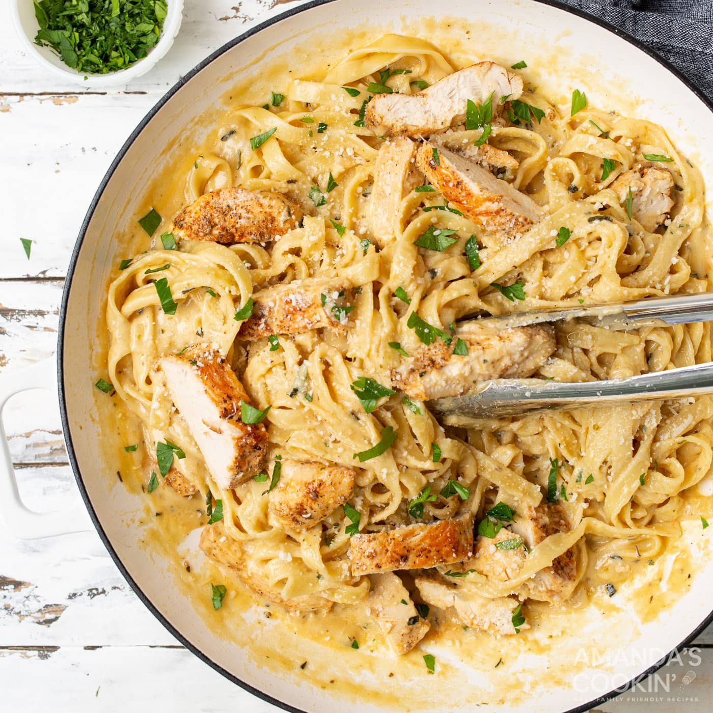

Chicken Alfredo

Description
Classic chicken alfredo is one of those recipes people
can't seem to get enough of. Golden brown pan-seared chicken
paired with rich cheesy alfredo and fettuccine noodles all
seasoned to flavorful perfection is hard to top! It's a belly
filler and a recipe we come back to again and again for an easy
weeknight meal.
Whether you're looking for comfort food or something simple, this
dish is for you and your family! It's a quick dish to make if your
husband is arriving earlier than expected!
Ingredients
- 2 Lbs Boneless Skinless Chicken Breasts
- 1/2 Tsp Garlic Powder
- 1/4 Tsp Paprika
- 1/4 Tsp Black Pepper
- 1 Tbsp Olive Oil
- 8 Ounces Fettuccine Pasta or Linguine
- 1/2 Cup Butter
- 1 Tbsp Italian Seasoning
- 1/2 Tbsp Minced Garlic
- 1 Cup Heavy Cream
- 8 Ounces Grated Parmesan Cheese
Directions
- Season chicken breasts with garlic powder, paprika, and black pepper.
Heat a large 12 inch skillet over medium heat with olive oil.
- Sear chicken on both sides and cook through. Remove chicken from skillet.
Allow the chicken to rest for 5 minutes before cubing/slicing.
- Cook the pasta to package instructions.
- Add butter, raw garlic, and Italian seasoning to the skillet. Slowly pour
in the heavy cream, whisking while combining. Dust in the cheese and stir
until slightly thick. Add the cooked pasta and chicken. Toss and serve
garnished with parsley or basil.